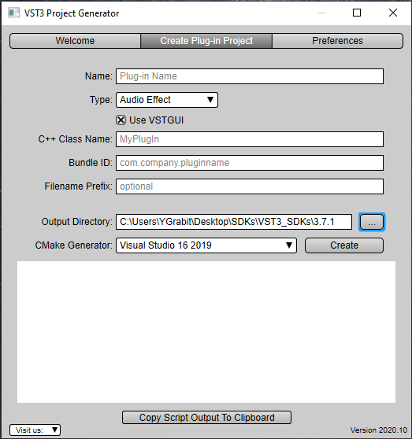

Generate a new plug-in with the Project Generator App
On this page:
- Goal
- Part 1: Getting and installing the VST SDK
- Part 2: Using the VST 3 plug-in Project Generator application
Goal
This tutorial explains how to create a new audio plug-in by using the VST 3 Project Generator included in the VST SDK and how to add some basic features.
The artifact will be an audio plug-in that can compute a gain to an audio signal and can be loaded into VST 3 hosts like Cubase, WaveLab, ...
Part 1: Getting and installing the VST SDK
For downloading the SDK, see the section "How to set up my system for VST 3".
You have the following possibilities to start a new project:
- You can use the helloworld template.
- Or, which is easier and recommended, you can use the VST 3 Project Generator application included in the VST SDK. The following steps show how to use it.
Part 2: Using the VST 3 plug-in Project Generator application
The VST 3 Project Generator application included in the VST SDK is available for Windows and for macOS.
Start the application located in the VST3_Project_Generator folder of the VST SDK.
Check that the Preferences tab has the required information: see Setting the Preferences.
In the Create Plug-in Project tab you have to enter information about the plug-in that you want create:

Check the Create Plug-in Project tab of the VST 3 Project Generator dialog for more detailed documentation.
Once you have entered all information, click Create. A script is started which creates a project with updated files in the Output directory. After this step, the IDE (Visual Studio or XCode) is launched.
Compile the project and test your new plug-in. The plug-in is created in the Output Directory, in order to make it visible to a VST 3 host you may have to copy or symbolic-link it to the official VST 3 Locations / Format.
For example, if you chose Audio Effect as Type, a simple Stereo→Stereo plug-in is created.
A good way to understand how a VST 3 plug-in works is to add breakpoints in each function in the processor and controller files:
tresult PLUGIN_API MyPluginController::initialize (FUnknown*context);
tresult PLUGIN_API MyPluginController::terminate ();
//...
tresult PLUGIN_API MyPluginProcessor::initialize (FUnknown*context);
//...
and start a VST 3 host from the debugger.
That´s it, now you could start to code, see next tutorial Code your first plug-in.